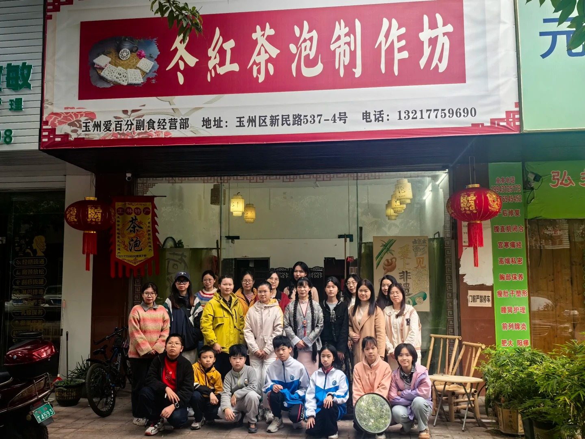
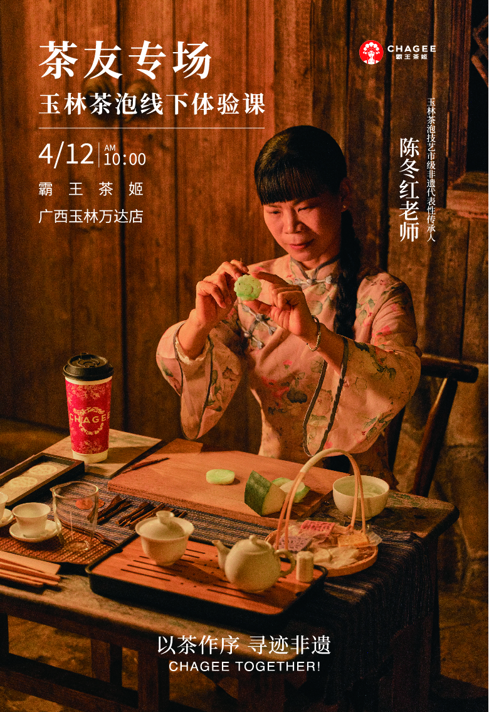

雅集共赏·非遗传承
近期雅事

体验课收官｜把冬日浪漫雕进心里🌼
《鬱家·妆点时光》项目负责人申晴及其团队受邀参加茶泡体验课👫 在体验课上通过非遗传承人的讲解📢 团队深入学习了茶泡的历史背景并亲自体验了茶泡的制作✍🏻️

非遗茶泡技艺体验活动简讯
4月12日，玉林市级非遗茶泡技艺传承人陈冬红联合霸王茶姬品牌， 于广西玉林万达店举办“以茶作序 寻迹非遗”主题体验课。活动现场通过茶艺演示、茶品品鉴及制作体验， 生动展现传统茶泡技艺的匠心与美感。参与者沉浸于竹编茶篮、錾刻茶饼等文化场景中， 感受非遗与现代品牌融合的独特魅力。
体验课收官｜把冬日浪漫雕进心里🌼
《鬱家·妆点时光》项目负责人申晴及其团队受邀参加茶泡体验课👫 在体验课上通过非遗传承人的讲解📢 团队深入学习了茶泡的历史背景并亲自体验了茶泡的制作✍🏻️